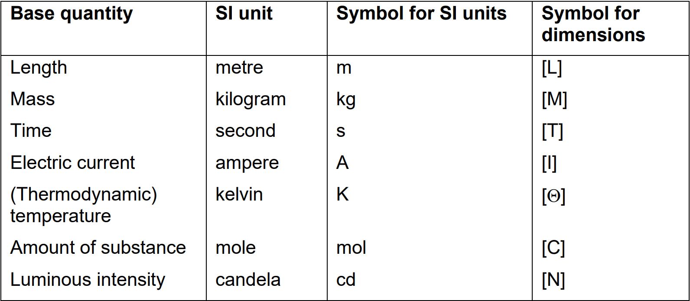
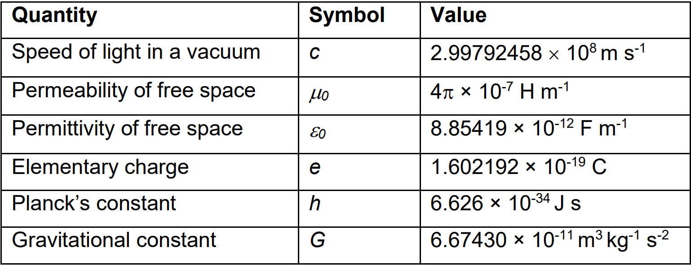

Dimensional Analysis
Contents
Dimensional Analysis#
We will find that there are many important physical problems that we would like to understand, but where there are practical, financial, computational or scientific impediments that prevent us from solving the problem exactly. In such cases, we will need often to be able to provide an order of magnitude solution, and in many cases this will either prove to be adequate or it will help us towards finding a more accurate solution.
Dimensional analysis provides one method of solving physical problems approximately.
Units vs dimensions#
Dimensions refer to types of physical properties that can be measured whilst units are the way we have chosen to assign a value or quantity to the amount of that variable, e.g. ‘length’ is a dimension whilst ‘m’ is the SI unit we have chosen to use to quantify length (our American colleagues might have chosen units of ‘feet’).
Most physical quantities have associated units, for example a distance might be measured in metres, miles or light years. Although great care is needed when mixing units within a single equation, it is nonetheless meaningful to consider a length that is equal to a metre plus a foot, or to say that 10 centimetres is equal to 100 millimetres. In contrast, it is not physically meaningful to consider a quantity that is equal to a metre plus a kilogram, nor to say that 10 centimetres is equal to 100 grams.
Equations relating physical quantities must be dimensionally homogeneous. That is, the dimensions (but not necessarily the units) must be the same:
on both sides of an equality
on both sides of a plus or minus sign.
In an analogous way, the dimensions of the arguments must disappear for trigonometric, exponential and similar functions – it does not make sense to take the cosine of ten kilograms or raise four to the power of half a metre.
This simple idea often has far reaching consequences. In many cases, if we know the variables that are important in a physical system, then we can discover the form of the equations that relate them together using only information about their dimensions.
All physical quantities have dimensions and units derived from 7 base or primary physical quantities. Table 1 lists those quantities, the SI units and symbols and the symbols used for the dimensions of those quantities.

Table 1: Base quantities, SI units and symbols for dimensions
Specifying dimensions#
The dimensions of a physical quantity are conventionally written using square brackets. For example, if \(\rho\) is density, \(m\) is mass, and \(r\) is the radius of a sphere, then:
This equation does not imply that \(\rho=m/r^{3}\), only that their dimensions are the same.
Many common variables will have dimensions that are combinations of mass, length, and time. We give each of these the symbols \(M\), \(L\), and \(T\). Thus we can write the dimensions of density = mass / volume as \([ML^{-3}]\), and of force = mass × acceleration as \([MLT^{-2}]\).
In thermal problems, variables can also have temperature as a dimension written as \([\Theta]\) For example, the dimensions of thermal conductivity are \([M LT^{-3}\Theta^{-1}]\).
In problems that involve electricity or magnetism, variables can also depend on electric charge \([Q]\) which, for historical reasons, is not base quantity, and instead is written in base quantities as current × time with dimensions \([IT]\)
Indicial equations#
An indicial equation is an equation in which the power(s) are unknown.
The pressure \(P\) at a depth \(z\) below the surface of a static body of water with a constant density \(\rho\) is:
Dimensionally, this is:
Suppose that we did not know this, and simply assumed that pressure was some function of density, acceleration due to gravity and depth:
Now, for this to be true, there must be some combination of \(\rho\), \(g\) and \(z\) that has the same dimensions as \(P\).
Since we can see that the dimensions of \(\rho\), \(g\) and \(z\) are all independent (that is, we cannot combine any two of these to make a quantity that has the same dimensions as the third), then the only way to balance the dimensions is to assume:
where \(a\), \(b\), \(c\) and \(k\) are constants yet to be found. Note that \(k\) has no dimensions – it is just a number. Dimensionally we have:
For this to balance, we require the powers of \(M\), \(L\) and \(T\) to be separately equal on both sides of the equation. Thus, although this looks like one equation, it is really three separate simultaneous equations:
For \(M\), \([M]=[M]^{a}\), so: $\(a=1\)$
For \(L\), \([L^{-1}]=[L^{-3}]^{a}\times[L]^{b}\times[L]^{c}\), so: $\(-1=-3a+b+c\)$
For \(T\), \([T^{-2}]=[T^{-2}]^{b}\), so: $\(-2=-2b\)$
Solving these simultaneous equations, we get, \(a = 1\), \(b = 1\), \(c = 1\), and deduce that:
where \(k\) is a constant that does not have any dimensions.
Dimensional analysis on its own cannot tell us anything about the value of the constant \(k\): this depends upon our choice of units. The advantage of using the SI system of units is that this system has been designed so that for most equations \(k~1\). That is, they may be equal for example to \(1/2\) or \(\pi^{2}\), but are unlikely to be equal to \(10^{7}\). In many problems, including the one above, the value of the constant is 1. There are, however, certain fundamental physical constants that are very different from 1, even when using SI units. These constants are believed to be universal (literally) in nature and in time. Table 2 lists the constants you are most likely to encounter in your studies together with their values in SI and units.

Table 2: Universal physical constants, symbol and values in SI (with units).
You may find that you can solve simple problems without writing out the indicial equations explicitly and solving them, but in general try to solve the problem formally anyway because an intuitive approach will become increasingly difficult with more complicated problems.
Dimensionless variables#
Ordinary numbers, such as \(2\) or \(\pi\), have no dimensions associated with them; they are dimensionless. Some physical variables are also dimensionless – for example strain which is a ratio of two lengths (or a ratio of two areas, volumes or angles).
Dimensionless numbers and dimensionless variables play an important role in aiding our understanding of physical problems and are important in designing scale models and in parameterising experiments.
The Buckingham pi theorem states that any physical problem that can be described by \(N\) variables using \(n\) dimensions (in other words \(n\) types of physical quantities, not the number of spatial dimensions!) can also be described using only \(N – n\) dimensionless variables.
Dimensions of angles, vectors, differentials, integrals, functions#
Angles have no dimensions but they do have units (in radians or degrees). Their dimensions are \([1]\) since an angle is just a means of describing a ratio between two lengths.
The dimensions of a vector are the same as the dimensions of its magnitude.
The dimensions of ordinary and partial differentials and integrals are obtained straightforwardly by ignoring the differentiation and integration, and using simply the dimensions of the variables in the equation. For example, the dimensions of \(dx/dt\) are the same as the dimensions of \(x/t\), and the dimensions of \(∫dx\) are the same as the dimensions of \(x\).
The dimensions of the vector differential operators \(\nabla\) (grad), \(\nabla\cdot\) (div), and \(\nabla\times\) (curl), are \([L^{-1}]\), and of \(\nabla^{2}\) (the laplacian) are \([L^{-2}]\), since \(\nabla\equiv \left( \frac{\partial}{\partial x},\frac{\partial}{\partial y},\frac{\partial}{\partial z} \right)\).
The dimensions of trigonometric, inverse trigonometric, exponential and logarithmic functions are all \([1]\).
The arguments of trigonometric and exponential functions must be dimensionless.
The arguments of logarithms can have dimensions. However, care is needed to ensure that the resulting equation is dimensionally sensible, e.g. the equation \(2 \log x − \log y = 1\) can be rewritten as \(x^{2}/y=10\), so that \(x^{2}\) must have the same dimensions as \(y\) if the original equation is to make sense.
Note that you can often use these properties to check that mathematical results, and intermediate steps, are sensible. If the objects in your equations have (or could be assigned) dimensions, then all the stages must make dimensional sense. This will not ensure you’re your results are right, but it will often be sufficient to indicate when they are wrong.
# import relevant modules
%matplotlib inline
import numpy as np
import matplotlib.pyplot as plt
# create our own functions
def dont_show_scale(ax):
ax.set_yticklabels([])
ax.set_xticklabels([])
ax.set_xticks([])
ax.set_yticks([])
return ax
Problem 2 – Centripetal force#
The tension in a string as a mass is twirled around in a horizontal circle, or the gravitational force that keeps a satellite in a circular orbit, is called the centripetal force. Use dimensional analysis to determine how this force \(F\) is related to the mass of the object \(m\), its speed in its orbit \(v\), and the radius of that orbit \(r\). That is, find \(a\), \(b\) and \(c\) if:
You should recover a result that you may already know for the magnitude of centripetal force. Check that your final answer is indeed dimensionally homogeneous.
In this problem, the constant k is equal to one if the orbit is circular.
Find \(a\), \(b\) and \(c\) if \(F=km^{a}v^{b}r^{c}\).
Dimensionally this is:
For \(M\), \(1 = a\).
For \(L\), \(1=b+c\).
For \(T\), \(-2=-b\).
Solving gives: \(a = 1, b = 2, c = −1\), so:
In this problem, \(k = 1\), but we cannot determine that using dimensional analysis.
# plot the relations between F and its independent variables (m, v, r)
fig, (ax1, ax2, ax3) = plt.subplots(1, 3, figsize=(15, 5))
fig.tight_layout(w_pad=4)
x = np.linspace(0,4,100)
ax1.plot(x, x, 'b')
ax1.set_xlabel('$m$', fontsize=16)
ax1.set_ylabel('$F$', fontsize=16)
ax1.set_title('$F \propto m$', fontsize=16)
dont_show_scale(ax1)
ax2.plot(x, x**2, 'b')
ax2.set_xlabel('$v$', fontsize=16)
ax2.set_ylabel('$F$', fontsize=16)
ax2.set_title('$F \propto v^{2}$', fontsize=16)
dont_show_scale(ax2)
x = np.delete(x, 0) # remove 0 as 1/0 is infinity
ax3.plot(x, x**-1, 'b')
ax3.set_xlabel('$r$', fontsize=16)
ax3.set_ylabel('$F$', fontsize=16)
ax3.set_title('$F \propto 1/r$', fontsize=16)
dont_show_scale(ax3)
<AxesSubplot:title={'center':'$F \\propto 1/r$'}, xlabel='$r$', ylabel='$F$'>
Problem 4 – Tsunami waves#
Tsunamis are produced by very long-period waves in the ocean that are initiated by a sudden change in the position of the sea surface, caused for example by a submarine earthquake or landslide. Gravity acts to restore the sea-surface to the horizontal, and the resulting movement of water propagates as a wave.
We might guess that the velocity \(v\) of a tsunami wave depends upon the density of seawater \(\rho\), the acceleration due to gravity \(g\), and the depth of the ocean \(z\). Use dimensional analysis to discover the relationship.
Do you discover anything special about the importance of density in this problem?
The Krakatoa explosion in Indonesia generated a tsunami that travelled to Cape Town in South Africa at an average velocity of \(200\) \(m/s\). Assuming that the unknown constant is equal to \(1\) (a simple laboratory experiment shows that it is), use your result to calculate the average depth of the Indian ocean.
Use dimensional analysis to discover the relationship:
Density is not involved – this is the only variable that contains mass, so there is no way to include it.
Calculate the average depth of the Indian ocean: \(200 = \sqrt{9.8z}\), so \(z \approx 4100\) m.
# plot the relationship above
z = np.linspace(0,5000,200)
def tsunami_velocity(depth):
return (9.8*depth)**0.5
def ocean_depth(water_wave_velocity):
return (water_wave_velocity**2)/9.8
plt.figure(figsize=(8,6))
plt.plot(z, tsunami_velocity(z), 'b')
plt.plot(ocean_depth(200), 200, 'ro', label='Indian ocean')
plt.xlabel('z (m)')
plt.ylabel('v (m/s)')
plt.title('A plot of wave velocity vs depth in the ocean', fontsize=14)
plt.legend(loc='best', fontsize=10)
<matplotlib.legend.Legend at 0x1d9e7f4d520>
References#
Lecture note and practical for Lecture 1 of the Physical Processes module